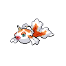

Назад
Голдин
Голдин — Покемон 1 поколения под номером 118 в Покедекс. Обитает он в регионе Канто и относится к Водному типу. Голдин — очень красивый Покемон с плавниками, которые элегантно вздымаются в воде. Однако с этим Покемоном нельзя терять бдительности, так как он может сильно поранить своим рогом.
Тип:
Водяной
Эволюция

# 118 Голдин
=>
# 119 Сикинг